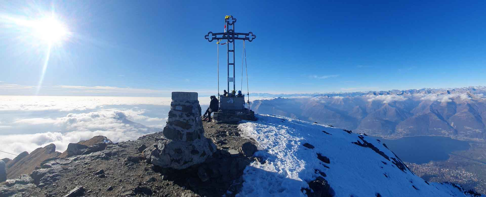
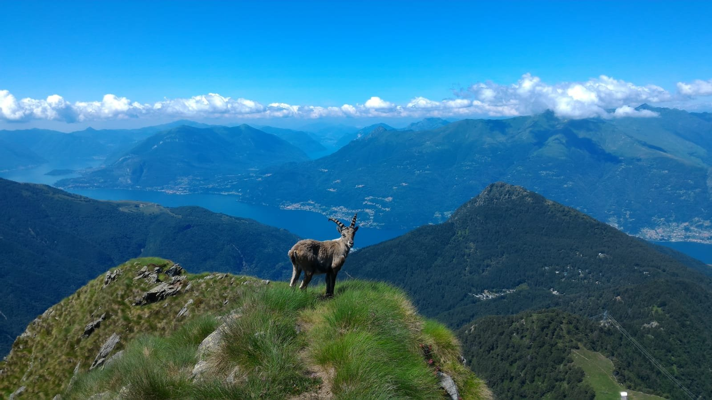

Il Monte Legnone è una montagna delle Alpi alta 2.610 m s.l.m., la cima più alta della provincia di Lecco e del settore più occidentale delle Alpi Orobie. La vetta del Legnone si eleva a punto tale da essere chiaramente visibile da Milano e da parte della Brianza.

La splendida vista sul lago di Como dalla cima del Legnone
